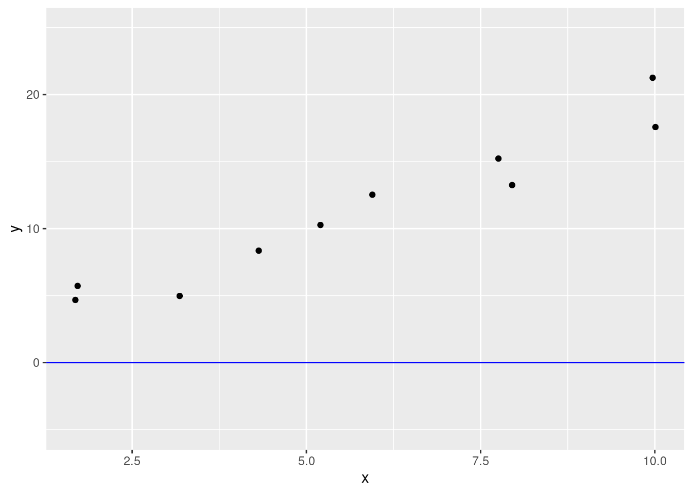

sim_model <- lm(y ~ x, data=sim_df)15 More Models
15.1 Interaction terms
15.1.1 Independence and interaction
So far we have assumed that each term is independent: i.e. each one contributes to the response variable \(y\) a separate amount proportional to its coefficient.
However, it is possible for variables to interact with each other:
\(y = m_1 x_1 + m_2 x_2 + m_3 x_1 x_2 + c\)
This linear model has an interaction term: \(x_1 x_2\). What this means is that the contribution of either variable depends somewhat on the value of the other!
For example, consider an experiment where we are looking at the effect of water and sunlight on plant height. Both variables may increase a plant’s height - however they are also dependent on each other. If we keep a plant in complete darkness, then no amount of water will help it grow (and vice versa). In otherwords, the effect of either sunlight or water on plant height depends on how much of the other variable the plant is receiving.
It is very easy to add interaction terms to a linear model. For example, the formula above would be written something like:
y ~ x1 + x2 + x1 * x2
As you can see, we just add an asterisk * between variables that we wish to have an interaction between.
15.2 Hypothesis tests for models
15.2.1 Linear models and hypothesis tests
You may remember from our first modeling module that the tidy function reported a p-value for the model and for each explanatory variable. See the p.value columns in both of these examples:
sim_model %>%
glance() %>%
select(r.squared, p.value)# A tibble: 1 × 2
r.squared p.value
<dbl> <dbl>
1 0.935 0.00000512As you will remember from our inference modules, the p-value is the probability that the actual data was generated in a world in which the null hypothesis is true.
Null hypothesis?! But we haven’t specified any hypotheses for our linear model, have we?
In fact, there is a null hypothesis for every linear model, although we have never formally written it down. The null hypothesis for a linear model is that there is no relationship between the response and explanatory variables. In other words, our null hypothesis is that the line of best fit is a horizontally flat line (e.g. the blue line in this plot):
sim_df %>%
ggplot() +
geom_point(mapping = aes(x, y)) +
geom_abline(slope = 0, intercept = 0, color = "blue") +
ylim(-5,25)
In other words, the p-value is the probability that the data came from this line. Just by looking at it, we can see that this is not very likely, and in fact the p-value is 0.000005 (or 0.0005%), i.e. statistically very unlikely.
We continue to use our regular significance threshold, \(\alpha = 0.05\). In this case, we can reject our null hypothesis (that there is no relationship).
However, hypothesis testing only tells us the probability that there is a relationship, or not. If there is a relationship, it doesn’t tell us how good it is, i.e. how well our model fits the data. For this, we need to continue to use the \(R^2\) value, as well as our graphs to check the 3 main assumptions of the linear model.
15.2.2 p-values of individual variables
The tidy() function also reports a p-value for each variable in the model.
sim_model %>%
tidy()# A tibble: 2 × 5
term estimate std.error statistic p.value
<chr> <dbl> <dbl> <dbl> <dbl>
1 (Intercept) 1.27 1.06 1.20 0.264
2 x 1.75 0.164 10.7 0.00000512For individual variables, the null hypothesis is that each individual explanatory variable has no relationship with the response variable. In other words, our null hypothesis is that the intercept and slope are 0.
As we can see for this example, because the p-values of the slope is below 0.05, so we reject our null hypothesis. We find that the non-zero slope of the x variable is statistically significant. However, the intercept has a p-value of 0.26. This is greater than 0.05, so we cannot reject our null hypothesis of a zero intercept for this particular dataset.
(This dataset was simulated with an intercept of zero, so that makes sense!)
A note on scientific notation
In the previous examples, our p-values have been written as strange numbers, such as: 2.637853e-01
This is a convenient way of writing numbers that are very large or very small. We can write 1.2 million (1,200,000) as:
\(1.2 \times 10^6\)
i.e. 1.2 times 1 million, or
1.2e6which uses
eto represent “10 to the power of”.For numbers that are less that one, we can do the same thing but use a negative power of ten. For example, we can write 0.263 as:
\(2.63 \times 10^{-1}\)
or
2.63e-1because \(10^{-1}\) is 0.1